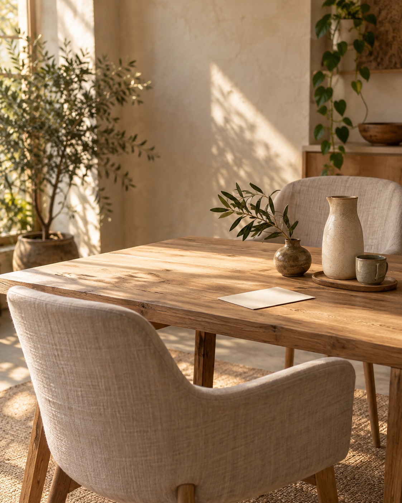

01
Erstgespräch & Anamnese
Wir nehmen uns Zeit für Ihr Anliegen, Ihre Fragen und den Kontext, in dem Sie sich gerade bewegen.
Mehr erfahrenRaum für Ihr persönliches Anliegen
Naturheilkundliche Begleitung mit Zeit, Klarheit und einem offenen Ohr – für Menschen, die ihre Gesundheit bewusst in den Blick nehmen möchten.
Demo-Website · Inhalte und Kontaktdaten bitte ersetzen
Die Praxis
Willkommen in der Praxis Morgenlicht – einem ruhigen Ort für eine persönliche und ganzheitliche Betrachtung.
Manchmal tut es gut, aus dem Alltag herauszutreten und wahrzunehmen, was Körper und Seele gerade brauchen. In einem geschützten Rahmen schauen wir gemeinsam auf Ihr Anliegen, Ihre Lebenssituation und mögliche nächste Schritte.
Diese Demo-Texte beschreiben eine mögliche Ausrichtung. Bitte ersetzen Sie sie vor der Veröffentlichung durch Ihre tatsächlichen Schwerpunkte, Qualifikationen und Angebote.
Lernen Sie mich kennenMit Ruhe hinschauen
Eine gute Begleitung schafft Orientierung, ohne zu überfordern. Sie gibt Raum für Fragen, für Beobachtungen und für kleine Schritte, die zu Ihrem Alltag passen.
Was möchten Sie heute besser verstehen?
— Leitfrage für den Beginn einer gemeinsamen Sitzung
Mögliche Schwerpunkte
Die folgenden Leistungen sind bewusst als editierbare Beispiele formuliert. Bitte führen Sie nur Angebote auf, die Sie tatsächlich anbieten und fachlich verantworten.
Wir nehmen uns Zeit für Ihr Anliegen, Ihre Fragen und den Kontext, in dem Sie sich gerade bewegen.
Mehr erfahrenGemeinsam betrachten wir alltagstaugliche Impulse, die zu Ihren Zielen und Ihrem persönlichen Rhythmus passen.
Mehr erfahrenSanfte, achtsame Übungen können dabei helfen, den eigenen Körper bewusster wahrzunehmen und Pausen zu gestalten.
Mehr erfahrenDer erste Schritt
Ein klarer Ablauf schafft Vertrauen. Die Details stimmen wir immer individuell auf Ihr Anliegen ab.
Gespräch anfragenSie erzählen, was Sie beschäftigt und was Sie sich von der Begleitung wünschen.
Wir schauen gemeinsam auf Ihre Situation und klären offene Fragen.
Sie erhalten transparente nächste Schritte, die zu Ihnen und Ihrem Alltag passen.
Gut zu wissen
Schreiben Sie eine E-Mail oder rufen Sie an. In einem kurzen Vorgespräch klären wir, ob Ihr Anliegen zu meinem Angebot passt.
Hilfreich sind Ihre aktuellen Fragen, eine Liste der regelmäßig eingenommenen Medikamente und – falls vorhanden – relevante Unterlagen. Bitte senden Sie keine sensiblen Gesundheitsdaten unverschlüsselt per E-Mail.
Nein. Die Inhalte dieser Website und die angebotene Begleitung ersetzen keine ärztliche Diagnose oder Behandlung. Bei akuten Beschwerden wenden Sie sich bitte an eine ärztliche Praxis; in Notfällen an 112.
Das hängt von Ihrem Tarif und Ihrer Versicherung ab. Bitte klären Sie eine mögliche Kostenübernahme direkt mit Ihrer Krankenkasse oder Versicherung.
Kontakt
Sie möchten herausfinden, ob die Praxis zu Ihrem Anliegen passt? Schreiben Sie gern oder rufen Sie an.
Bitte keine medizinischen Notfälle oder sensiblen Gesundheitsdaten per E-Mail. In einem Notfall wählen Sie 112.

Wichtiger Hinweis: Diese Website ist eine Demo. Die Texte stellen keine individuelle Beratung dar und enthalten keine Heil- oder Erfolgsversprechen. Bitte ersetzen und prüfen Sie alle Inhalte, Qualifikationsangaben und Kontaktdaten vor der Veröffentlichung.